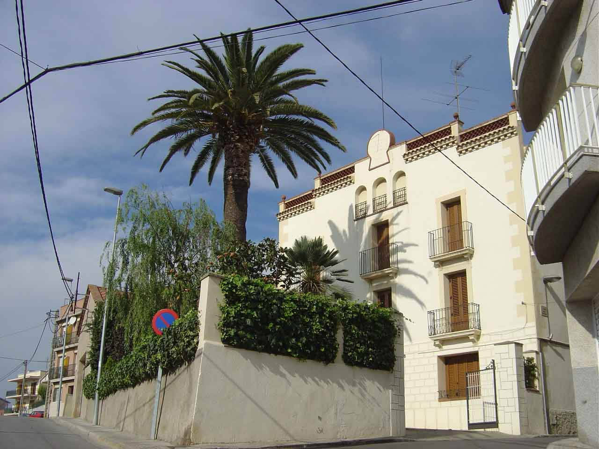
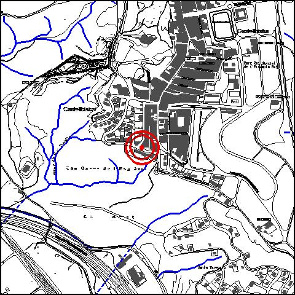

|  |  |
Nom de l’element: Cl Fuser
Clau d’identificació: A.10
Nucli o indret: c/ Anselm Clavé 48.
UTM: X=414.855, Y= 4.591.839, 15 m snm.
Règim del sòl: sòl urbà.
1.1. Època de construcció i tipologia:
Edifici datat entre el 1700 i el 1715, d’arquitectura tradicional del casc urbà. Presenta una secció rectangular amb planta baixa més dues plantes pis, amb una coberta a dues aigües de teula. Els murs són de mamposteria i obra. La façana té una composició simètrica i és ordenada amb tres obertures per planta i unes arcades a la planta sotacoberta. El coronament de la façana és esgraonat i incorpora elements ornamentals coronats pel rellotge de Sol. Totes les obertures rectangulars estan emmarcades amb motius de talla clàssica. Antigament les balconades eren de pedra. L’antiga distribució de la vivenda era: el cos principal, el celler, el magatzem i la quadra. Als voltants del 1700 es va construir l’edifici en planta baixa i al 1800 aproximadament, es van construir les dues plantes restants i la sotacoberta. Aquest edifici, construït per orde del sacerdot Blanc, es va situar en un altiplà que fou rebaixat fins a assolir la cota actual. L’edifici també rep el nom de Cal Fuster, degut als avantpassats de la família propietària. Actualment només hi roman la vivenda, un cos annex amb terrassa plana i un magatzem-garatge. Al pati hi ha una palmera de grans dimensions.
1.2. Estat de conservació:
En general, molt bo. Tots els elements constructius de l’edifici presenten un bon estat de conservació
1.3. Ús actual:
Habitatge
1.4. Accés:
Accés fàcil des del c/ Bellavista o des del c/ Anselm Clavé.
Edifici de principis del segle XVIII, d’arquitectura tradicional.
3.1. Usos admesos:
Unihabitatge, residencial, hoteler (excepte aparthotel; i amb un màxim de 30 places), oficines i serveis, educatiu, recreatiu cultural i social, recreatiu de restauració.
3.2. Condicions d’ordenació:
Segons Pla Especial a redactar.
3.3. Accés i serveis:
Accés des del c/ Bellavista o des del c/ Anselm Clavé.
BCIL (Bé Cultural d’Interes Local)